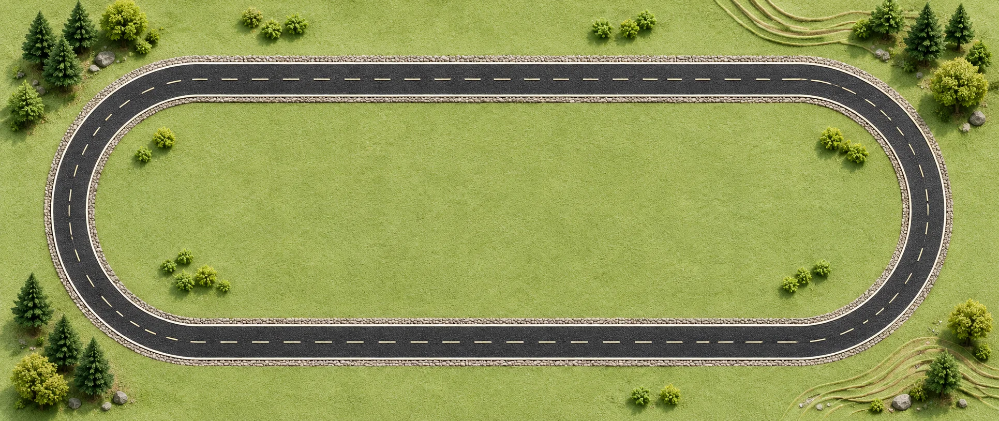

自然渋滞は、なぜ生まれる？
事故も工事もない高速道路。1台にブレーキをかけてみよう。
車は前へ進むのに、減速する場所はどちらへ動くだろう？
周回道路シミュレーション
走行中
減速が届いたのは
0台後ろ
平均速度
45km/h
車は時計回り
波は反時計回り
つまみを動かすと、その時刻の道路と速度グラフで一時停止します。再生すると、そこから観察を続けられます。
実験の操作
少ない多い
出発時の車間 13m
道路の車をタップして選べます。
観察ノート
黄色い車のすぐ後ろに注目。
いまは3台とも同じ速さです。黄色い車にブレーキをかけると、1台後ろ、2台後ろの速度はいつ下がるでしょう？
赤い点は、出発時より15％遅くなった地点
3台の速度
走行開始から車間を変えて比べてみよう
同じ地点で2.4秒だけブレーキ。台数を変えると、減速は何台後ろまで届く？
渋滞のしくみ
1台が減速すると、車間が縮まる
前の車が少し速度を落としても、すぐ後ろの車はしばらく元の速さで進みます。その間に、2台の距離が縮まります。
後ろの車も、少し遅れて減速する
後ろの車は、詰まった車間を取り戻すために速度を落とします。車間が短いと、前の車より強くブレーキをかけることもあります。この時間差が次の車にも重なります。
混雑する場所が、後ろへ移る
先頭の車は加速して抜けていきます。その間に、車列の後ろから別の車が混雑に加わります。この入れ替わりで、低速の車が集まる場所が進行方向と逆に動きます。
実験の条件 高速道路の1車線を、一周420 mの輪にした模型です。全車が等間隔で出発し、0.6秒前の車間と前の車の速度に応じて加減速します。出発時より速度が15％落ちた地点に赤い点を残します。台数や注目車を選び直すと等間隔に戻ります。
実車での観察 一周230 mの円形道路を22台が走った実験でも、低速の車のかたまりが後ろへ移りました。杉山雄規ほか（2008）
高速道路では、上り坂に変わる場所でのわずかな速度低下もきっかけになります。NEXCO東日本による解説